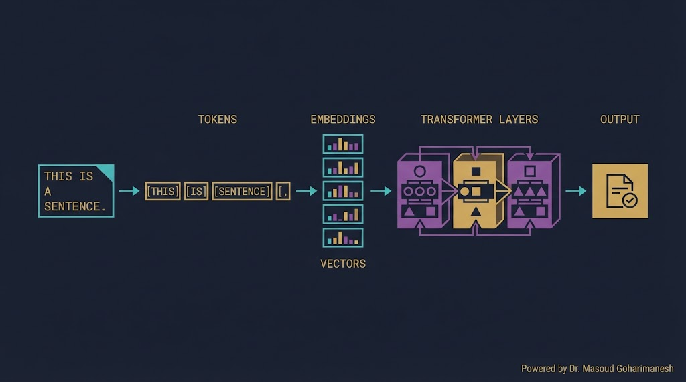
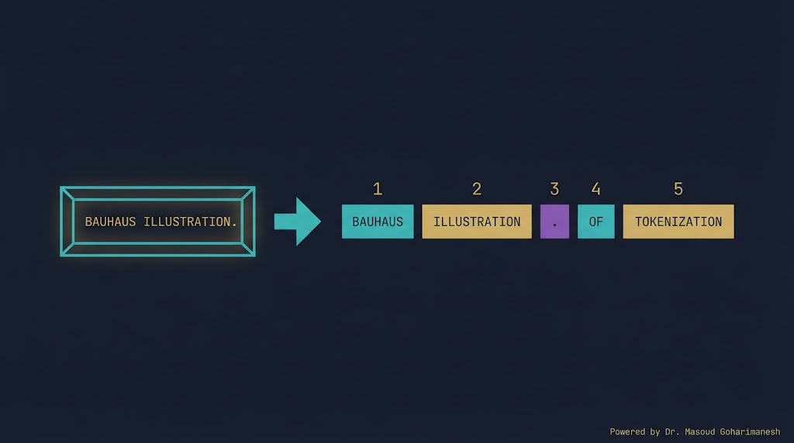
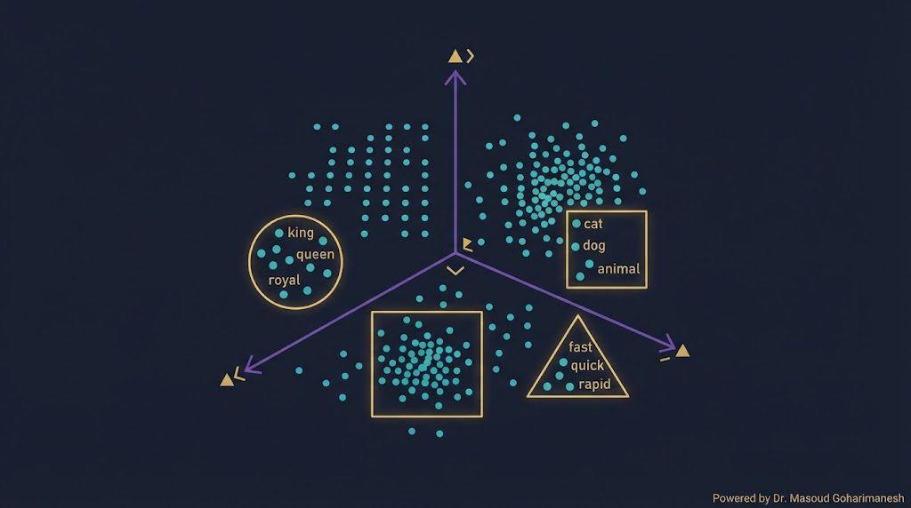
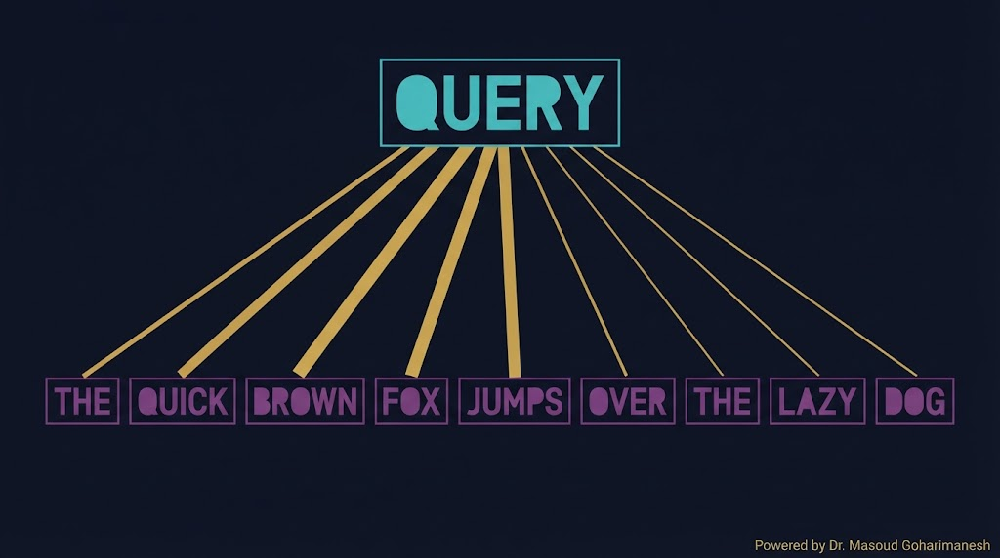
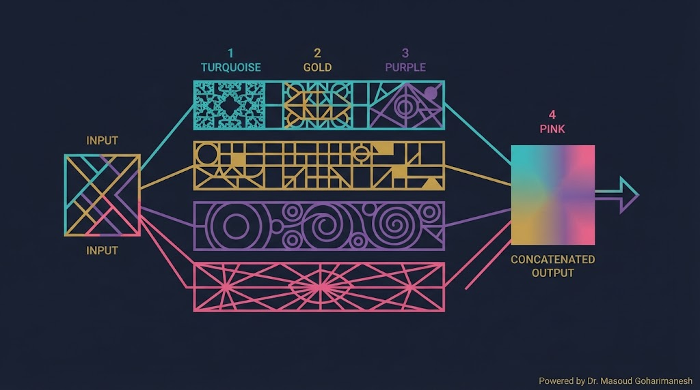
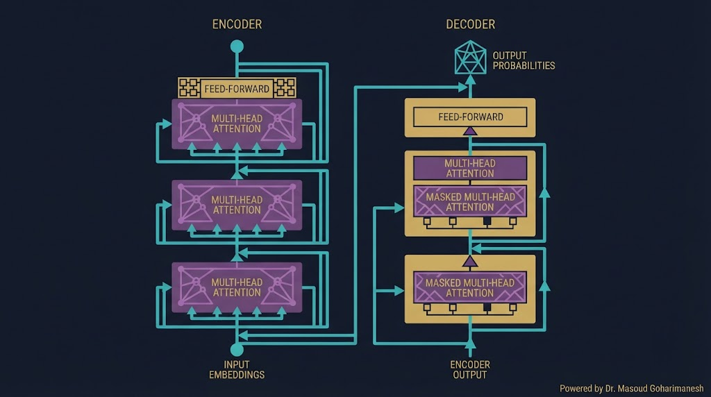
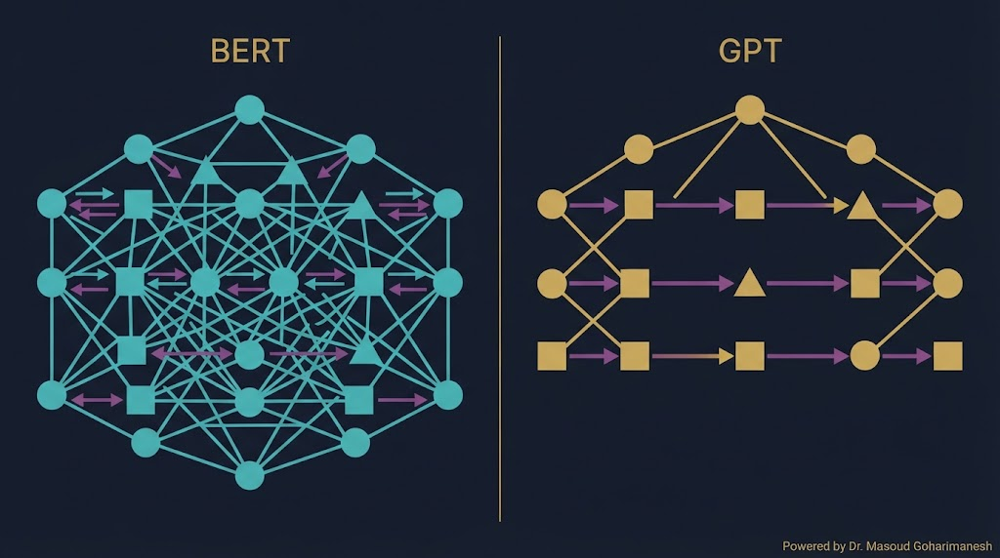
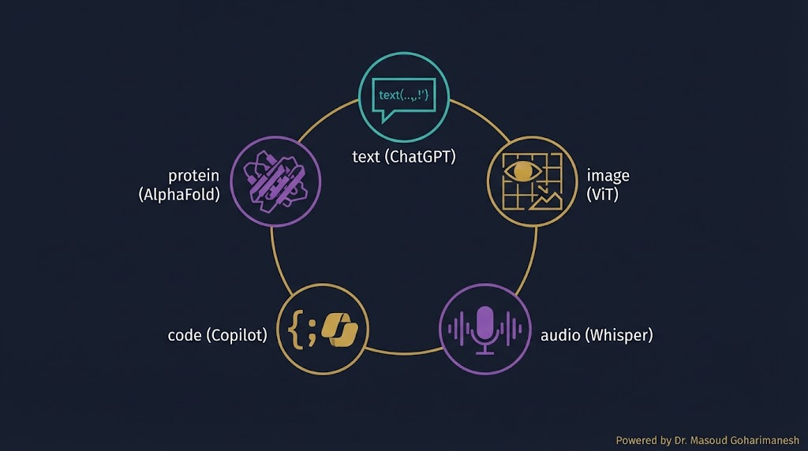

جلسه ۱۷ — NLP و Transformer
جلسه ۱۷ — NLP و Transformer
جلسه ۱۷ — NLP و Transformer
جلسه ۱۷ — NLP و Transformer
 ستاره این جلسه
به یاد شهدای والامقام
ستاره این جلسه
به یاد شهدای والامقامNatural Language Processing · Attention · Transformers
From Words to ChatGPT
RL در مکانیک، CartPole، Path Planning
NLP، Attention، Transformer، BERT، GPT
✅ NLP چیست؟
✅ Tokenization و Embedding
✅ Attention Mechanism
✅ Transformer Architecture
✅ BERT در برابر GPT
✅ کاربرد در مهندسی مکانیک
تا جلسه قبل، با تصویر و کنترل و RL کار کردیم. اما امروز، انقلاب بزرگ AI در حوزه زبان رخ داده — ChatGPT، Gemini، Claude، همه بر پایه معماریای به نام Transformer ساخته شدهاند که در سال ۲۰۱۷ در مقالهای معروف («Attention is All You Need») معرفی شد.
Transformer فقط برای زبان نیست — امروز در بینایی (ViT)، صوت (Whisper)، پروتئین (AlphaFold)، و حتی مکانیک (تشخیص عیب از متن) استفاده میشود.
بر پایه Transformer
قلب Transformer
پایه مدلهای پایه
دستیار مهندسی، تحلیل مقالات
NLP (Natural Language Processing — پردازش زبان طبیعی) حوزهای از AI است که به تعامل ماشین با زبان انسان میپردازد.

تحلیل احساسات، ترجمه، خلاصهسازی
ChatGPT، تولید متن، کد
NER، استخراج اطلاعات
چتبات، دستیار صوتی
کامپیوتر نمیتواند متن را مستقیم پردازش کند. اول باید متن را به توکن (کلمه یا زیرکلمه) تقسیم کنیم، سپس هر توکن را به یک عدد تبدیل کنیم.

یک کلمه = یک توکن (مشکل: واژههای جدید)
یک حرف = یک توکن (دنباله طولانی)
بهترین روش — استفاده در GPT، BERT
یک متن وارد کنید و ببینید چطور به توکنها و سپس به اعداد تبدیل میشود.
هر توکن (عدد) به یک بردار تبدیل میشود — بردارهایی که معنی کلمه را در خود دارند. کلمات مشابه، بردارهای نزدیک دارند.

Google، ۲۰۱۳
Stanford، ۲۰۱۴
BERT، GPT — بردار وابسته به متن
وقتی جمله «گربه روی حصیر نشست چون خسته بود» را میخوانیم، میفهمیم «بود» به «گربه» اشاره دارد نه «حصیر». Attention همین کار را در مدل میکند — به کلمات مرتبط وزن بیشتر میدهد.

چه چیزی میخواهم؟
چه چیزی دارم؟
چه اطلاعاتی میدهم؟
یک جمله را انتخاب کنید و ببینید Attention چطور بین کلمات ارتباط برقرار میکند.

هر کلمه به تمام کلمات جمله توجه میکند
چند Attention موازی — کشف روابط مختلف
همه کلمات همزمان پردازش میشوند (برخلاف RNN)

متن را میفهمد (BERT، T5)
متن تولید میکند (GPT)
ترجمه (T5، BART)
روی هر جزء کلیک کنید تا توضیح آن را ببینید.
Transformer برخلاف RNN ترتیب کلمات را نمیفهمد. Positional Encoding به هر کلمه یک «مهر موقعیت» اضافه میکند.
الگوی تکرارشونده و پیوسته
ترتیب کلمات معنی را تغییر میدهد

| ویژگی | BERT | GPT |
|---|---|---|
| معماری | Encoder-only | Decoder-only |
| جهت | دو جهته | یک جهته (چپ به راست) |
| وظیفه | درک (فهم متن) | تولید (نوشتن متن) |
| کاربرد | طبقهبندی، NER، QA | ChatGPT، تولید کد |
| پیشآموزش | Masked LM | Causal LM |
| مدل | شرکت | سال | ویژگی |
|---|---|---|---|
| Transformer | ۲۰۱۷ | مقاله اصلی | |
| BERT | ۲۰۱۸ | درک دو جهته | |
| GPT-1 | OpenAI | ۲۰۱۸ | تولید متن |
| GPT-3 | OpenAI | ۲۰۲۰ | ۱۷۵ میلیارد پارامتر |
| ChatGPT | OpenAI | ۲۰۲۲ | RLHF + GPT |
| LLaMA | Meta | ۲۰۲۳ | باز و قابل اجرا |
| Gemini | ۲۰۲۳ | چندوجهی | |
| DeepSeek | DeepSeek | ۲۰۲۴ | باز و قوی |

خلاصهسازی مقالات علمی
کد MATLAB/Python برای مسائل
پیدا کردن مقالات مرتبط
ChatGPT، Claude، DeepSeek
# نصب pip install transformers from transformers import AutoTokenizer # بارگذاری Tokenizer BERT tokenizer = AutoTokenizer.from_pretrained('bert-base-uncased') text = "Neural networks are powerful tools" # Tokenization tokens = tokenizer.tokenize(text) print("Tokens:", tokens) # تبدیل به ID ids = tokenizer.encode(text) print("IDs:", ids) # برگشت به متن decoded = tokenizer.decode(ids) print("Decoded:", decoded) # Tokenize دستهای batch = tokenizer(["Hello world", "AI is great"], padding=True, return_tensors="pt") print(batch)
import torch import torch.nn as nn import torch.nn.functional as F def scaled_dot_product_attention(Q, K, V, mask=None): # Q, K, V: [batch, seq_len, d_k] d_k = Q.size(-1) # محاسبه نمرات توجه scores = torch.matmul(Q, K.transpose(-2, -1)) / torch.sqrt(torch.tensor(d_k, dtype=torch.float32)) if mask is not None: scores = scores.masked_fill(mask == 0, -1e9) # Softmax attention_weights = F.softmax(scores, dim=-1) # خروجی output = torch.matmul(attention_weights, V) return output, attention_weights # تست seq_len = 5 d_k = 64 Q = torch.randn(1, seq_len, d_k) K = torch.randn(1, seq_len, d_k) V = torch.randn(1, seq_len, d_k) output, weights = scaled_dot_product_attention(Q, K, V) print("Output shape:", output.shape) print("Attention weights:\n", weights)
from transformers import pipeline # ۱. تحلیل احساسات sentiment = pipeline('sentiment-analysis') result = sentiment("This bearing is faulty and dangerous!") print(result) # ۲. پاسخ به سوال qa = pipeline('question-answering') result = qa({ 'question': 'What is the bearing temperature?', 'context': 'The bearing temperature is 85 degrees Celsius.' }) print(result) # ۳. خلاصهسازی summarizer = pipeline('summarization') text = "Long technical paper..." result = summarizer(text, max_length=100) print(result[0]['summary_text']) # ۴. ترجمه translator = pipeline('translation_en_to_fa') result = translator("Machine learning is powerful") print(result)
[AI] HW17 - نام - شماره دانشجویی به arcslab.uth@gmail.com
جستوجوی پروژههای NLP
جلسه ۱۷ — اصلیتحلیل متن و Transformer
پشتیبانمثالهای عملی NLP
پیشنهادیدر Perplexity جستوجو کنید: «Transformer applications mechanical engineering 2024» و ۳ مقاله معتبر پیدا کنید.
متن → توکن → اعداد
بردار کلمات — معنی در فضا
توجه به کلمات مرتبط
Encoder، Decoder، Multi-Head
درک در برابر تولید
Next Session: LLM & Prompt Engineering
• LLM — مدلهای زبانی بزرگ
• ChatGPT، Gemini، Claude، DeepSeek
• Prompt Engineering
• Chain-of-Thought
• کاربرد در مهندسی مکانیک